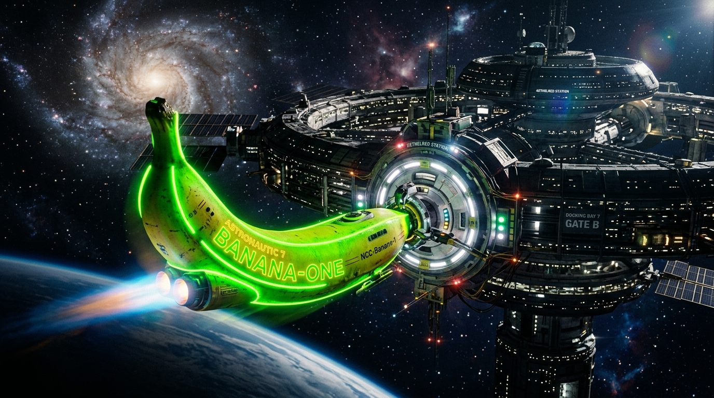
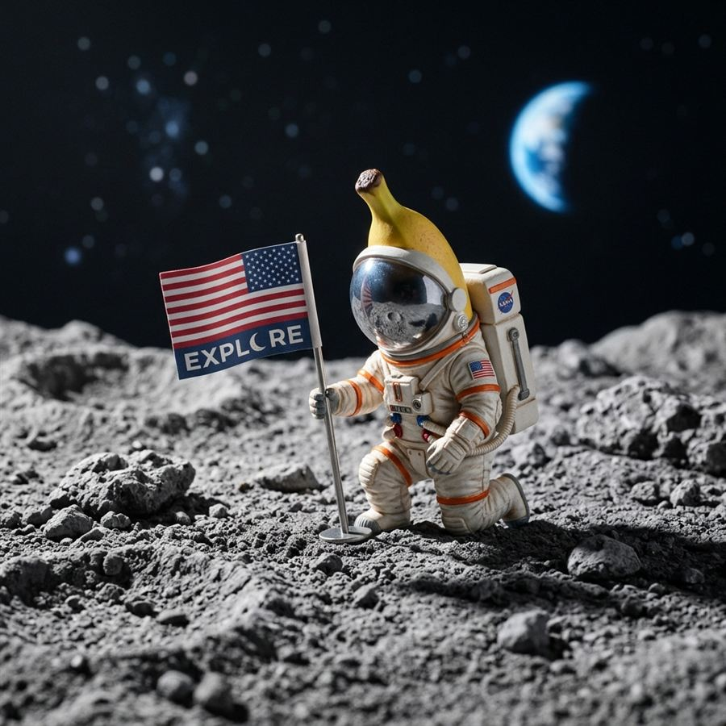

A tiny local middleware that lets Claude Chat, Cowork and Claude Code generate images with Google's Nano Banana models and drop them straight into Downloads\Nano.

Claude never talks to Google directly. It talks to the middleware on your PC, which holds your key.
/image in Claude Code, or the image MCP tool in Chat and Cowork.
server.js on 127.0.0.1:7861 forwards the prompt to Gemini's streaming API.
The image streams back as NDJSON chunks and is reassembled, converted to PNG if needed.
Written to your real Downloads folder (registry lookup), in Nano\.
One middleware, three front doors.
A user skill adds /image to the CLI and the desktop Code tab.
/image a fox in a library, 2KAn MCP server exposes an image tool and prompt. Ask for a picture and it shows up inline.
"draw me a banana balloon"Script it, batch it, pipe the saved path anywhere.
node image.js --ar 9:16 "poster"Straight out of Downloads\Nano, first try.

Windows, Node 18+, no npm packages.
Clone it.
git clone https://github.com/GunGreenEyes/BananaInterop.git F:\Projects\GunGreenEyes\BananaInteropPut a Gemini API key from AI Studio in settings.json (created on first run). Image models need billing on the key's project.
For Chat and Cowork, register the MCP server in %APPDATA%\Claude\claude_desktop_config.json, then quit Claude from the tray and reopen it.
{
"mcpServers": {
"banana-interop": {
"command": "C:\\Program Files\\nodejs\\node.exe",
"args": ["F:\\Projects\\GunGreenEyes\\BananaInterop\\mcp.js"]
}
}
}For Claude Code, copy skill\SKILL.md to ~\.claude\skills\image\SKILL.md.
settings.json is re-read on every request, so edits apply to the next image.
| Key | Default | Notes |
|---|---|---|
model | gemini-3.1-flash-image | Nano Banana 2. gemini-3-pro-image for best quality and text. |
aspectRatio | 1:1 | 1:1, 2:3, 3:2, 3:4, 4:3, 4:5, 5:4, 9:16, 16:9, 21:9 |
imageSize | 1K | 1K, 2K or 4K |
outputDir | Downloads | Empty means your real Downloads folder. |
outputSubfolder | Nano | Empty saves directly into outputDir. |
port | 7861 | Middleware listens on 127.0.0.1 only. |
autoStartServer | true | Clients start the middleware if it isn't running. |